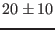
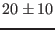

Next: Gotland Deep - #Neumannetal2002### Up: Biogeochemical scenarios Previous: Northern North Sea - Contents
During the Fladenground Experiment 1976, extensive biogeochemical observations have been carried out as well. Here, the modelling work of Kühn and Radach (1997) will be reproduced with GOTM. All GOTM modelling details have been documented by Burchard et al. (2006).
The bloom at the Fladenground started with the onset of thermal
stratification of the water
column at 19 April (Julian day 110), reached its maximum at 1 May
with an depth-integrated phytoplankton biomass of about 11 g C m (Radach et al. (1980)). At 16 May the phytoplankton stock reached again the
pre-bloom level. This main bloom was dominated by diatoms;
flagellates constituted a smaller secondary bloom some weeks later.
In accordance with the rapid production of organic matter the
nitrate pool was depleted: from 8 mmol N m
(Radach et al. (1980)). At 16 May the phytoplankton stock reached again the
pre-bloom level. This main bloom was dominated by diatoms;
flagellates constituted a smaller secondary bloom some weeks later.
In accordance with the rapid production of organic matter the
nitrate pool was depleted: from 8 mmol N m before the bloom to
less than 0.1 mmol N m
before the bloom to
less than 0.1 mmol N m at the end of the bloom
(Brockmann et al. (1983)).
The observed average daily primary production during the bloom was
1.2 g C m
at the end of the bloom
(Brockmann et al. (1983)).
The observed average daily primary production during the bloom was
1.2 g C m d
d (Weigel and Hagmeier (1980)).
The part of organic substance settling to the bottom was estimated
from sediment trap measurements to about  %
of the primary production during that period
(Davies and Paine (1984), Radach et al. (1984)). The remaining 80 % were
obviously used by the zooplankton and partly -
via dissolution of the PON - also by bacteria. From estimates
of the grazing pressure of the dominant copepod, Calanus finmarchicus
(see Krause and Radach (1980)) it was concluded that additionally herbivorous
microzooplankton must have played an essential role in grazing
on the phytoplankton stock.
The role of advection on the ecosystem dynamics was discussed
by Eberlein et al. (1980). Thus the total FLEX '76 period could be
divided into two phases: the first 6 weeks (until 6 May) with
only weak horizontal advection, and the following 4 weeks with distinctively
larger influence of advection on the nutrient concentrations.
(Weigel and Hagmeier (1980)).
The part of organic substance settling to the bottom was estimated
from sediment trap measurements to about  %
of the primary production during that period
(Davies and Paine (1984), Radach et al. (1984)). The remaining 80 % were
obviously used by the zooplankton and partly -
via dissolution of the PON - also by bacteria. From estimates
of the grazing pressure of the dominant copepod, Calanus finmarchicus
(see Krause and Radach (1980)) it was concluded that additionally herbivorous
microzooplankton must have played an essential role in grazing
on the phytoplankton stock.
The role of advection on the ecosystem dynamics was discussed
by Eberlein et al. (1980). Thus the total FLEX '76 period could be
divided into two phases: the first 6 weeks (until 6 May) with
only weak horizontal advection, and the following 4 weeks with distinctively
larger influence of advection on the nutrient concentrations.
This biogeochemical scenario has been reproduced by Kühn and Radach (1997)
by means of the Fasham et al. (1990) biogeochemical
model (see also section  ) together with a
one-equation turbulence closure model. Burchard et al. (2006),
from which most of the present section has been adapted
documented the implementation of this model into GOTM.
) together with a
one-equation turbulence closure model. Burchard et al. (2006),
from which most of the present section has been adapted
documented the implementation of this model into GOTM.